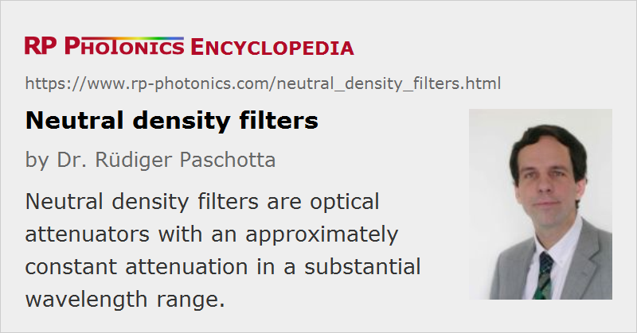

Neutral Density Filters
Acronym: ND filters
Definition: optical attenuators with an approximately constant attenuation in a substantial wavelength range
More general term: optical filters
Categories: general optics, photonic devices
How to cite the article; suggest additional literature
Author: Dr. Rüdiger Paschotta
Neutral density filters are optical attenuators which have an approximately constant degree of attenuation (filter loss) in a substantial wavelength range – e.g., throughout the visible spectrum or in some part of the infrared spectrum. This wavelength independence distinguishes them from color filters, which attenuate light in certain wavelength ranges substantially more than in others. They are similar to gray sun glasses, but in contrast to those they are usually flat, have a higher optical quality and often a higher attenuation. They are often provided in rectangular or circular shapes and may be fitted into holders for easier use.
The strength of attenuation is often quantified as an absorbance or optical density, which is the absolute value of the logarithm of base 10 of the power transmission factor. For example, an optical density of 3 means an attenuation of optical powers by the factor 103 = 1000.
Absorbing and Reflective Neutral Density Filters
Some neutral density filters are made from a glass which is doped with a material which provides the wanted absorption. Such absorbing filters may have either no coating or a broadband anti-reflection coating.
Filters do not necessarily attenuate by absorption; one can also utilize reflection. It is common to use a thin metallic coating on the glass, which provides both reflection and absorption. The optical density of such a filter is strictly speaking not an absorbance, but only quantifies the overall transmission loss. An advantage of such metallic filters is that strong attenuation is possible even with rather thin filters. Also, a very flat transmission spectrum is possible. On the other hand, the resulting reflections may be disturbing for some applications, where non-reflective ND filters are then more appropriate.
As reflected light does not heat the filter, it might in principle tolerate higher optical powers. However, as there is a substantial absorption in a very thin metal film, one may actually obtain surface damage at power levels which a purely absorbing filter would tolerate. Also, oxidation of the coating can occur when it is heated. Cleaning is also more delicate than with pure glass filters.
Note also that the reflectivity may not be flat at all in the wavelength region where the transmittance is nearly constant, because the amount of absorption is also wavelength-dependent.
Applications of Neutral Density Filters
Neutral density filters are often used in photography, when ambient light is too strong. Such a filter allows one to reduce the aperture size such that a larger depth of focus can be achieved for the images, or to increase the shutter opening time in order to obtain blur effects resulting from movements. Purely absorbing filters are most common in photography. There are also graduated filters where the absorbance varies e.g. from top to bottom.
In optics and laser technology, neutral density filters also find many applications. For example, one often uses them to attenuate intense light before it hits a photodetector, or to attenuate a laser beam. However, one should keep in mind that neutral density filters are in general no high-power attenuators: the application of high optical powers can lead to thermal beam distortions or even to laser-induced damage of the filter, at least locally.
By placing several neutral density filters from a large filter kit in series, one can realize many different degrees of total attenuation. When using such combinations of reflective filters for laser beams, however, one should be careful to avoid that the filters are hit in a perpendicular fashion. The reason is that the often substantial reflectivities lead to the formation of optical resonators. Resonance effects can strongly modify the overall transmission (of course, with a strong dependence on wavelength and gap width), and the resulting high resonant powers may destroy the filters.
Calibrated neutral density filters, with a well characterized optical density, can be useful e.g. for power meters, when the incident power must be calculated from the measured transmitted power.
Neutral Density Filter Wheels
A continuous adjustment of absorbance is possible with a rotatable neutral density filter wheel. Here, the absorbance may increase systematically along a circle around the center, until it jumps back to its original value. The wheel is often used for a beam the area of which covers only a tiny portion of the whole filter area, so that the absorbance within the beam is approximately constant.
Suppliers
The RP Photonics Buyer's Guide contains 34 suppliers for neutral density filters. Among them:
Questions and Comments from Users
Here you can submit questions and comments. As far as they get accepted by the author, they will appear above this paragraph together with the author’s answer. The author will decide on acceptance based on certain criteria. Essentially, the issue must be of sufficiently broad interest.
Please do not enter personal data here; we would otherwise delete it soon. (See also our privacy declaration.) If you wish to receive personal feedback or consultancy from the author, please contact him e.g. via e-mail.
By submitting the information, you give your consent to the potential publication of your inputs on our website according to our rules. (If you later retract your consent, we will delete those inputs.) As your inputs are first reviewed by the author, they may be published with some delay.
See also: optical attenuators, absorbance, optical filters
and other articles in the categories general optics, photonic devices
|  |
If you like this page, please share the link with your friends and colleagues, e.g. via social media:
These sharing buttons are implemented in a privacy-friendly way!